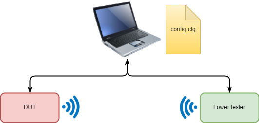

9305 Examples
This page shows some examples of Python scripts to control a 9305 device.
For the following examples, it is assumed that a 9305 device is declared in the configuration file config_local.cfg, like this:
[9305]
port = COMxx
...
However, if a default device has been defined, then the option --device=9305 can be skipped.
HEX File Programming (CLI)
The two commands below are needed only if something has already been programmed in NVM. Their goal is to enter into the configuration mode and to erase the flash memory main area (the information pages are not erased). It is also possible to enter into the configuration mode also by issuing a Power On Reset while toggling GPIO5 at a frequency of 32 kHz.
python blengine_cli.py --config config.cfg --device 9305 send EMSG_Enter_Configuration_Mode
python blengine_cli.py --config config.cfg --device 9305 send EMSMM_NVM_Erase_Main
Then the firmware image can be programmed by using the command below:
python blengine_cli.py --config config.cfg --device 9305 run emsystem_prog xxx_nvm_main.ihex
Note that the file to be programmed shall be in the Intel Hex format.
Once done, reset the device to start executing the NVM Application:
python blengine_cli.py --config config.cfg --device 9305 send EMSG_Leave_Configuration_Mode
Disable Sleep Mode
In order to disable the Sleep Mode, the command EMSG_Set_Sleep_Options shall be sent to the EM9305 with a UINT8 parameter set to 0x00.
python blengine_cli.py --config config.cfg --device 9305 send EMSG_Set_Sleep_Options --Sleep_Options=0x00
The parameter’s value 0x00 instructs the device to disable the automatic switch to sleep mode while the parameter set to 0x01 instructs the device to enable the automatic switch. Consequently, by using this command and playing with this parameter, it is possible to enable or disable the automatic switch to sleep mode.
Note: It is important to specify any hexadecimal value with a leading 0 when the value itself is less that 0x10. There might be sometimes a misinterpretation if such condition is not fulfilled. This is why the two values 0 and 1 exposed in the above example are written 0x00 and 0x01.
Read and Write Operations
Direct Registers Read and Write
It is possible de read from/write to device registers through the dedicated commands emsmm_write_register and emsmm_read_register.
WARNING: All hexadecimal values in these examples shall be entered in the big endian notation. Even if the 9305 ARC core CPU implementation is in little endian, this can be confusing so the following procedures automatically takes care of the inversion so the user does not have to bother.
The first argument is the register address and the second is the new value.
Here is an example for configuring some GPIOs as input and some others as output. The first hexadecimal value is the register address and the second one is the register configuration.
python blengine_cli.py --device 9305 run emsmm_write_register 0xF03400 0x03
python blengine_cli.py --device 9305 run emsmm_write_register 0xF03404 0x0C
The register at address 0xF03400 is used to select which GPIOs are configured as input. The register at address 0xF03404 is used to select which GPIOs are configured as output. And in both registers, bit 0 controls GPIO0 configuration, bit 1 controls GPIO1 configuration and so on.
Consequently in this example, the GPIO0 and GPIO1 are configured as input while GPIO2 and GPIO3 are configured as output.
WARNING: Writing directly into the device registers can lead to the device malfunction and should be used with care.
Direct Read/Write
It is also possible to use the generic procedures emsmm_read_at_address and emsmm_write_at_address to achieve the same goal than exposed above. Thus, these commands extend the device access to the other memories like the ROM, the RAM and the flash memory, not only the registers.
NOTE: The emsmm_write_at_address command will obviously fail when used to write on a non writable memory like the ROM or in the flash memory.
The following example shows a command that can be used to read trimming information (4 bytes).
python blengine_cli.py --config config.cfg --device 9305 send EMSMM_Read_At_Address --Start_Address=0xF00428 --Data_Length=4
And the following command can be used to write trimming information (0x06929f0f). Note that unlike the register access functions that take care of the data endianness, the data here shall be a byte array in which the data are provided in little endian. In such notation, the least significant byte (LSB) is given first, and the most significant byte (MSB) is given last.
python blengine_cli.py --config config.cfg --device 9305 send EMSMM_Write_At_Address --Start_Address=0x00F00428 --Data="bytearray([0x0f, 0x9f, 0x92, 0x06])"
The -–Data argument is evaluated by the python interpreter so it is possible to inject python code here.
Simple Connection Script
This example assumes that there are two BLE devices both connected to the host computer on which the BLEngine based application is running as shown in the figure below:

It assumes that there are a DUT device and a LOWER_TESTER device declared in the configuration file so they can be accessed by using their friendly name.
Thus, the two BLE devices can be either a 9304 or a 9305 chips.
NOTE: For 9305, the link layer must be programmed in the NVM (e.g., <SDK_PATH>/projects/nvm_bluetooth_controller/)
NOTE: For 9304, it is recommended to program the latest metapatch.
The script below shows the test that is done. It does the following operations:
configures the DUT to start advertising
activates the scan process on the lower tester for a default duration of 5 seconds
stop scan process
for each scanned device (the DUT and all other devices in the vicinity), open a connection
check the connected state
for connected devices, disconnect
shows up a message indicating how many connection succeeded
import logging
import time
import threading
from blengine import enable_cli_args, default_parser
from blengine.core.config import config, load
from blengine.core import logger
from blengine.core.config import config, load
from blengine.hci.engine import HciEngine
from blengine.core.transport import SerialTransport, serial_from_config
'''
This example buld a addresses list from advertising packets and try connecting to each devices
python ./examples/basic/helloScanConnect.py --config=../config.cfg --scan_duration=3
'''
# For fun and profit, we add a new arguments for cli.
default_parser.add_argument('--scan_duration', '-scan', type=int, default=5,
help='''scan duration in seconds''')
# Process the command line arguments.
args = enable_cli_args()
logger.init("HelloScanConnect")
logger.to_screen()
logger.debug()
def LE_scan(engine):
# Create an object on the upcoming events.
isScanFinished = threading.Event()
# Create a list of devices. This script can handle more than one DUTs.
devices = {}
# Timing might be an important information.
start = time.perf_counter()
def register_device(pkt):
# If the scan is not finished (<5 seconds) and an advertising packet has been
# received, add the originator device address along with the received packet.
# Otherwise do nothing.
if isScanFinished.isSet() is False:
if pkt.get("Event_Type") == 0:
print("found " + pkt.parameters.get("Address").hex())
devices.update({ pkt.get("Address").hex(): pkt })
# Check if the scan duration has elapsed. If yes, then stop the scan process.
if time.perf_counter() - start > args.scan_duration:
isScanFinished.set()
engine.unbind("on_LE_Advertising_Report")
# For each received advertising report, call the callback function defined above.
engine.bind("on_LE_Advertising_Report", register_device)
# Configure the scan process.
response = engine.send("LE_Set_Scan_Parameters",
LE_Scan_Type=0x01,
LE_Scan_Interval=0x0030,
LE_Scan_Window=0x0030
)
# Start scanning the BLE environment.
response = engine.send("LE_Set_Scan_Enable",
LE_Scan_Enable=0x01,
Filter_Duplicates=0x01,
wait_ack=False
)
# Add extra time (1 s) to process all received advertising (ADV) packets.
isScanFinished.wait(args.scan_duration+1)
# Disable the scan.
response = engine.send("LE_Set_Scan_Enable",
LE_Scan_Enable=0x00,
Filter_Duplicates=0x01
)
# And return the list of scanned devices.
return devices
def main():
import serial
# Instanciate the transport to the DUT.
transport = serial_from_config(config['DUT'])
connectables = []
is_connected = threading.Event()
def connected_device(pkt):
# Print the packet.
print(pkt)
# Usually, when receiving the "connection complete" event means that the connection is
# completed. However, as a general rule, check if connection status field is 0 (new
# connection succeeded) or 0xb (connection already established).
if pkt.get("status") in [0x0, 0xb]:
is_connected.set()
# Instanciate the HCI engine ngine
with HciEngine(transport) as engine:
# Set the callback when an event "connection complete" is received.
engine.bind("on_LE_Connection_Complete", connected_device)
# Debug statements. Log all TX and RX packets. This can be useful.
# engine.bind("on_tx", lambda pkt: logger.root().info("TX" + str(pkt)))
# engine.bind("on_rx", lambda pkt: logger.root().info("RX" + str(pkt)))
engine.send("Reset")
print("start scan")
# Start scanning...
devices = LE_scan(engine)
# When we reach this point, the scan is completed.
print("stop scan")
# Display number of devices found.
print("found %s devices:" % len(devices))
for d in devices:
# Try to connect to each found device.
pkt = engine.send("LE_Create_Connection",
LE_Scan_Interval = 0x0030,
LE_Scan_Window = 0x0030,
Initiator_Filter_Policy = 0x00,
Peer_Address_Type = 0x00,
Peer_Address = d,
Own_Address_Type = 0x00,
Connection_Interval_Min = 0x00AA,
Connection_Interval_Max = 0x00AA,
Connection_Latency = 0,
Supervision_Timeout = 0x01f4,
Min_CE_Length = 0,
Max_CE_Length = 0,
wait_ack=False,
retry=3)
# Wait two seconds. During these two seconds, the connection might complete. In such
# a case, an event "LE_Connection_complete" is received and the callback function
# "connected_device" is called. This function will then test the connection status field
# in the received packet and add the new device in the list of connected devices.
connected = is_connected.wait(2)
if connected:
print("%s Connection Success" % d)
# Add the device in the list of connected devices.
connectables.append(d)
# Then disconnect.
engine.send("Disconnect", Connection_Handle=pkt.response.get("Connection_Handle"))
else:
print("%s Connection Fail" % d)
# Clear the "connected" event flag, for the next device.
is_connected.clear()
if len(connectables):
print("Connectables Devices : %s" % "\n".join(connectables))
else:
print("no connectables devices")
if __name__ == "__main__":
main()